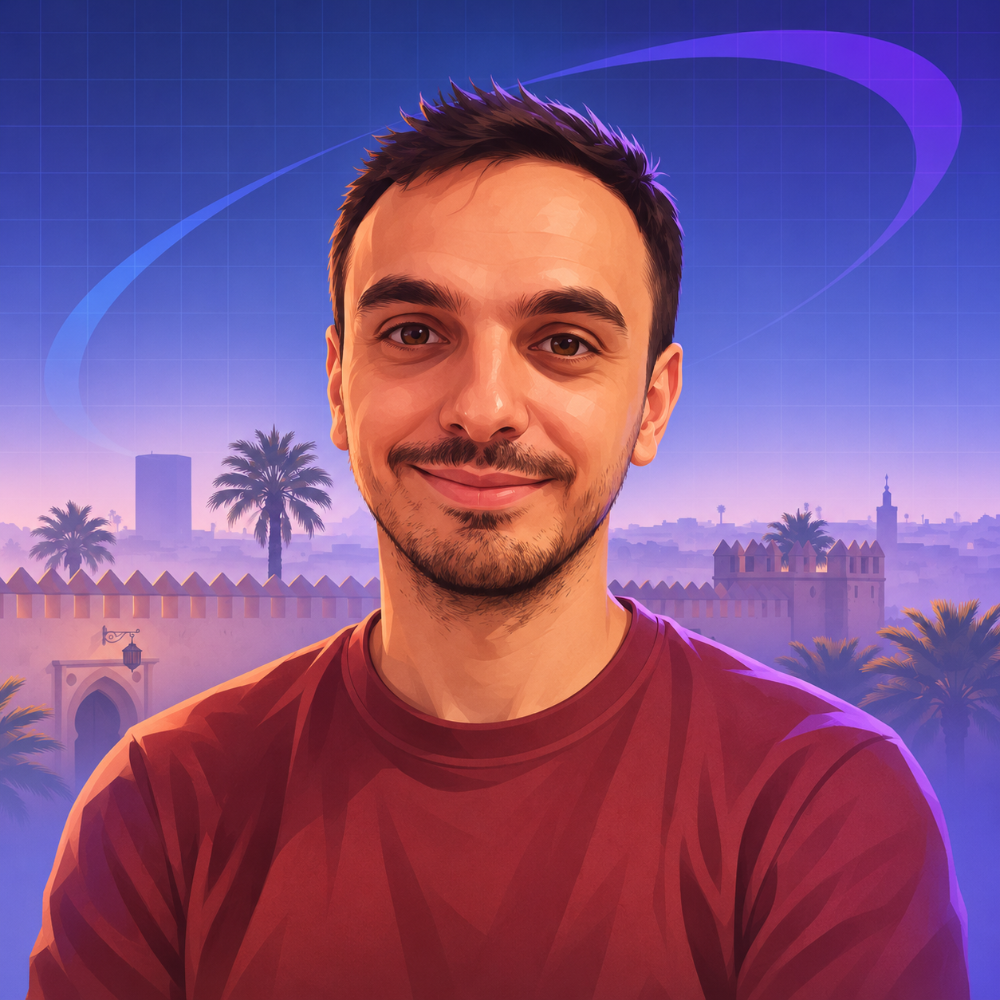

EuroSys 2027 Workshop
Heterogeneous Accelerator Lifecycle and
Orchestration for Large-Model Systems
Overview
Large-model workloads increasingly run across different generations and types of accelerators, with diverse memory, storage, and network infrastructure. Where a workload runs affects how much state must move, how resources can be shared, and how the system recovers from failures.
HALO brings together researchers and practitioners in operating systems, distributed systems, runtimes, computer architecture, and industrial AI infrastructure to discuss how to operate these systems reliably across training, post-training, fine-tuning, inference, and distributed serving.
Topics of Interest
Accelerator orchestration
Resource discovery, placement and scheduling, virtualization, isolation, and elasticity across heterogeneous devices.
Model and runtime state
Placement, movement, caching, and persistence of weights, adapters, checkpoints, activations, and KV caches.
Operating shared infrastructure
Observability, failure recovery, multi-tenant fairness, service-level objectives, and energy- and cost-aware resource management.
Call for Papers
HALO welcomes original systems research, industrial experience, early-stage ideas, position papers, negative results, and demonstrations. Contributions focused on models, kernels, or compilers should include a clear systems contribution.
Systems and experience papers
Up to 6 pages
Original research, deployed systems, or substantial operational experience.
Short papers
Up to 2 pages
Early-stage ideas, positions, negative results, industrial challenges, or demonstrations.
The proposed submission format is ACM two-column, with references excluded from the page limit. The workshop plans to use HotCRP for double-blind review. The submission link is pending.
ACM Digital Library proceedings are planned, subject to confirmation. The proposed format requires at least one author of each accepted contribution to register and present in person.
Tentative Program
The proposed morning schedule includes an invited keynote, paper presentations, and a roundtable on where control should reside across device runtimes, cluster schedulers, and model-serving systems.
| Time | Session |
|---|---|
| 09:00–09:10 | Welcome and workshop goals |
| 09:10–10:00 | Invited keynote on operating heterogeneous accelerator fleets |
| 10:00–11:00 | Systems and experience paper presentations |
| 11:00–11:30 | Coffee break |
| 11:30–12:10 | Paper presentation and lightning talks |
| 12:10–12:55 | Panel and roundtable |
| 12:55–13:00 | HALO Systems Agenda and closing remarks |
Organizers
-
Henk CorporaalEindhoven University of Technology
-
Dimitrios SoudrisNational Technical University of Athens
-
Muhammad ShafiqueNew York University Abu Dhabi
-
Christina GiannoulaMax Planck Institute for Software Systems
-
Yubin XiaShanghai Jiao Tong University
-
Zheng LiHuawei European Research Institute
-
Stefano CordaHuawei Technologies Switzerland AG
-

Dimosthenis MasourosNational Technical University of Athens
Program committee membership is pending.